BEGINNER MANUAL
3x3CUBE
7つのステップで、はじめての6面完成を目指す

3x3のキューブを揃えよう
今回は初心者向けの3x3キューブの揃え方を解説します。
まず初めに、このページで用いる用語を解説します。

今回紹介する手順は簡易CFOPと呼ばれる手順を用います。以下の7つのステップに分けてキューブを揃えていきます。クリックで各手順に飛ぶことができます。
では早速揃えていきましょう。
クロスを揃える

まずはクロスを作ります。上の図のピンクの位置のキューブを合わせます。6色の中から色を1つ選んで、その色のセンターが上になるようにキューブを持ち変えましょう。以下の図では選んだ色を水色で表示します。
エッジキューブが中段にあるとき
図のピンクの位置にエッジを入れる手順です。上面を回してピンクの位置に揃っていないエッジを持ってきて以下の手順を行ってください。最も基本的な手順です。


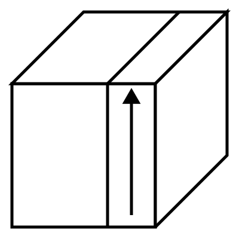
エッジキューブが下段にあるとき
図のピンクの位置にエッジを入れる手順です。上面を回してピンクの位置に揃っていないエッジを持ってきて以下の手順を行ってください。中段にあるときよりやや複雑な手順もあります。

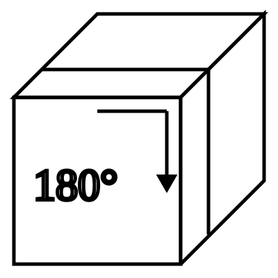


エッジキューブが上段にあり、向きが反対のとき
上段にありながら向きが反対のときは以下の手順を行ってください。

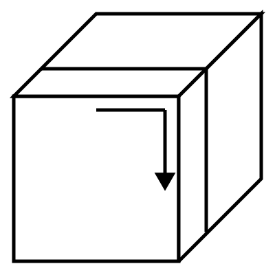
こうして以下の図のように上面に十字ができたら、次は側面の位置を合わせます。

何回か上の面を回すと、各側面の十字のエッジの側面(下図ピンクの場所)と側面のセンター(下図黄緑の場所)の色が2面以上同じになる場所があります。これが4側面全て同じ色のペアになるようにします。

揃っていないときは、以下の2つのいずれかの手順でエッジの位置を変えます。
揃っていないエッジが隣接しているとき

このときは揃っていないエッジを右と手前に持ってきて以下の手順を行ってください。

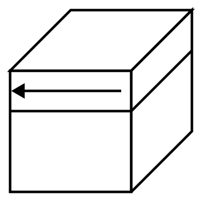
揃っていないエッジが対面になっているとき

このときは揃っていないエッジを左右に持ってきて以下の手順を行ってください。

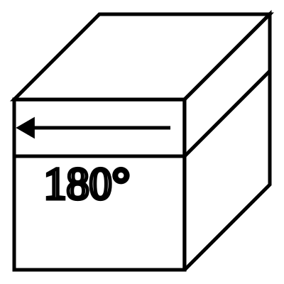
下図のように4面すべてエッジの側面とセンターの色が揃ったらこのステップはクリアです。

下段のコーナーを揃える

次は下段のコーナーを揃えて1面を完成させます。揃えたクロスを下の面に向けましょう。
まずは揃えたクロスの色を含むコーナーパーツを上面から探します。次にそのコーナーの他の2つの色を見て、その2色のセンターを探しましょう。最後に上面を何回か回し、選んだコーナーをその2色のセンターの間に持っていきましょう。
以下の3パターンがあります。以下の図では、クロスの色を水色、他の2つの色をピンク、黄緑で表現しています。2つのセンターが右、手前に向くように持ち変えましょう。
1. クロス色が手前を向いている場合

クロス色が手前を向いている場合の手順です。
2. クロス色が右を向いている場合

クロス色が右を向いている場合の手順です。
3. クロス色が上を向いている場合

クロス色が上を向いている場合の手順です。長い手順ですが、手前を向いている場合の手順を3回繰り返すだけなので覚えやすいです。
特殊なケース
ごくまれに下図のようにクロス色を含むキューブが下段にしかなかったり、位置が合っていても向きが違って入っていたりする場合があります。

このときは揃っていないコーナーが右下になるように持ち変えて1.の手順を行うことで、すでに入っているコーナーを追い出すことによって上段に持ってくることができます。その後また上の3つの手順を行って正しい位置にキューブを入れてください。
これを繰り返して、下の1面が揃い、1段目の側面が全て同じ色になったらこのステップは完了です。
中段のエッジを揃える

次は中段のエッジを揃えて下2段を完成させます。まずは上段から上面のセンターの色を含まないエッジを探しましょう。次に上面を回し、見つけたエッジの側面を同じ色のセンターの位置に合わせましょう。
次の2つの手順があります。見つけたエッジの2色が右、手前になるように持ち変えましょう。
1. エッジが手前にあるとき

エッジが手前にあるときの手順です。最初の4手は1段目を揃えるときの手順1と同じで、後ろの4手は1段目を揃えるときの手順2と同じです。
2. エッジが右にあるとき

エッジが右にあるときの手順です。最初の4手は1段目を揃えるときの手順2と同じで、後ろの4手は1段目を揃えるときの手順1と同じです。
特殊なケース
ごくまれに下図のように上面の色を含まないエッジが中段にしかなかったり、エッジが反対向きに入っている場合があります。

このようなときは揃っていないエッジが右手前に来るように持ち変えて1.の手順を行うことで、すでに入っているエッジを追い出すことによって上段に持ってくることができます。
これを繰り返して、下2段が揃ったらこのステップは終了です。
上面にクロスを作る

ここまでの手順で2段目までが完成しました。ここからは上段を合わせていくのですが、まずは上面のエッジの向きを合わせましょう。手順は3つあります。以下の図はキューブを上から見た図で、上面のセンターの色を黄色にしてあります。
1. L字型のとき

上を向いているエッジがL字型になっているときは、それらが左と奥にくるように持ち変えて上の手順を行ってください。
2. 一の字型のとき

上を向いているエッジが一の字型になっているときは、それらが左と右にくるように持ち変えて上の手順を行ってください。
3. 全てのエッジが上を向いていないとき

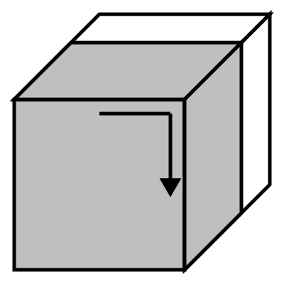

上を向いているエッジがないときは、上の手順を行ってください。7手目と12手目は前面を手前から2層同時に回してください。最初の6手は一の字型と同じです。
全てのエッジが上面を向いたらこのステップはクリアです。
上面を一色にする

次は上段のコーナーの向きを合わせて上面を一色にする手順です。ここではコーナーの向きに合わせて7つの手順があります。持つ向きに注意しましょう。
1. 魚型1


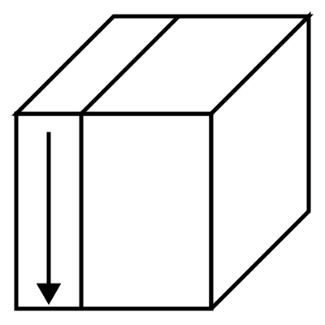
2. 魚型2

この2つのパターンはコーナーの向きが違うのでそこで見分けましょう。
3. 8の字型


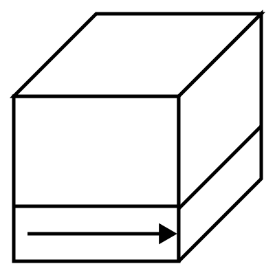
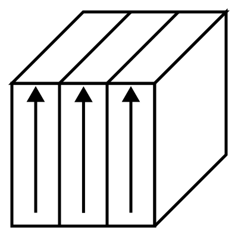
最初と最後の手順はキューブそのものを回転させる手順です。
4. Aの字型1

8の字型の手順を逆再生するとこの手順になります。
5. Aの字型2


Aの字型も2パターンあるので、コーナーの向きで見分けましょう。
6. 十字形1

長い手順ですが、2手目から5手目のサイクルを3回繰り返すだけなので覚えやすいです。
7. 十字形2

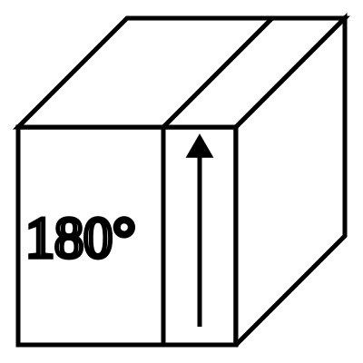
十字形も2パターンあるので、コーナーの向きで見分けましょう。
こうして上面が全て同じ色になったらこのステップはクリアです。
上段のコーナーの位置を合わせる

次は上段のコーナーの位置を合わせる手順です。各側面の2つの上段コーナーの側面の色を見ます。このとき以下のいずれかのパターンになっています。
- 1つの側面のコーナーの色が揃っている
- 全ての側面でコーナーの色が揃っていない
- 全ての側面でコーナーの色が揃っている
1. 1つの側面のコーナーの色が揃っているとき

図のように1つの側面だけコーナーの色が揃っている場合は、揃っている側面を左に向けて、上の手順を行ってください。この手順をTパームと言います。
2. 全ての側面でコーナーの色が揃っていないとき

図のように全ての側面でコーナーの色が揃っていない場合は上の手順を行ってください。この手順をYパームといいます。
3. 全ての側面でコーナーの色が揃っているとき
このときは何もすることはありません。
全ての側面でコーナーの色が揃ったら、上面を回転させて色を合わせてこのステップは完了です。
上段のエッジの位置を合わせる

いよいよ最後のステップです。上段のエッジの位置を入れ替えて6面を完成させましょう。以下の2つの場合に分けて考えましょう。
- 側面のうち1面が完全に揃っている
- 全ての側面が揃っていない
1. 側面のうち1面が完全に揃っているとき
以下のいずれかの手順を行えば揃います。


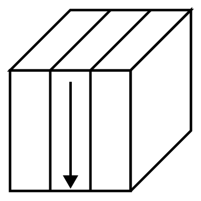

この手順をUパームaといいます。

この手順をUパームbといいます。
UパームaとUパームbを見分ける方法は、手前の面のコーナーの色(図では赤)のエッジが左側にあるときはUパームa、右側にあるときはUパームbになります。
2. 全ての側面が揃っていないとき
以下のいずれかの手順を行えば揃います。

この手順をHパームといいます。

この手順をZパームといいます。向きに注意しましょう。
HパームとZパームの見分け方は、隣接2面で2色になる箇所があるときはZパーム、そうでないときはHパームになります。
これらの状態からUパームaまたはUパームbを行うと1側面が揃うので、1面が揃っているパターンに帰着させて揃えることもできます。
図の水色の部分のような、キューブの角にあるパーツのことをコーナーキューブ、または単にコーナーといいます。図のピンク色の部分のような、コーナーとコーナーに挟まれた位置にあるパーツのことをエッジキューブ、または単にエッジといいます。図の黄緑色の部分のような、面の中央にあるパーツのことをセンターキューブまたは単にセンターといいます。